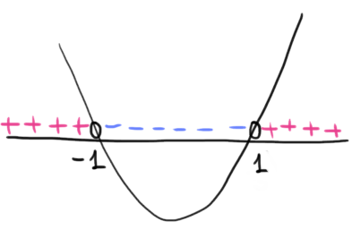

In altre parole, presi due valori successivi \(a\) e \(b\) in \(I\), il valore assunto da \(f\) nel punto a a sinistra, \(f(a)\), è minore del valore assunto da \(f\) nel punto a destra, \(f(b)\): scorrendo verso destra la funzione cresce.
In modo analogo, una funzione decrescente in un intervallo \(I\) se e solo se per ogni \(a, b \in I\) \[ a \lt b \,\,\,\Longrightarrow\,\,\, f(a) \gt f(b) \] Teorema
Sia \(y = f(x)\) una funzione definita su un intervallo \(I\) ed ivi continua e derivabile.
\(\boldsymbol{1})\,\,\) Se \(f'(x) \gt 0\) per ogni \(x \in I\) allora \(f\) è crescente in \(I\)
\(\boldsymbol{2})\,\,\) Se \(f'(x) \lt 0\) per ogni \(x \in I\) allora \(f\) è decrescente in \(I\)
\(\boldsymbol{1})\,\,\) Se \(f'(x) \gt 0\) per ogni \(x \in I\) allora \(f\) è crescente in \(I\)
\(\boldsymbol{2})\,\,\) Se \(f'(x) \lt 0\) per ogni \(x \in I\) allora \(f\) è decrescente in \(I\)
Applicazioni del teorema
Consideriamo la funzione \[ f(x) = \dfrac{x^3}{3} -x + 1 \] Essendo polinomiale il suo dominio è \(\mathbb{R}\) ed in questo insieme è continua e derivabile. La sua derivata è \[ f'(x) = x^2 -1 \] Studiamo il segno della derivata. Questo ci permettera di capire gli intervalli in cui la funzione è crescente o decrescente. \[ \begin{align*} &f'(x) \gt 0 \\\\ &x^2 -1 \gt 0 \end{align*} \] usando il metodo della parabola troviamo che il segno al variare della \(x\) è il seguente

Questo ci suggerisce che la funzione è
- crescente negl'intervalli \((-\infty\,,\,\,-1)\) e \((1\,,\,\,+\infty)\) dove la derivata ha segno positivo
- decrescente in \((-1\,,\,\,1)\) dove la derivata ha segno negativo.
Utilizzando il linguaggio grafico possiamo scrivere